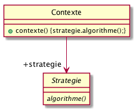

Introduction : importance des patrons

Science is what we understand well enough to explain to a computer. Art is everything else we do.
Donald Knuth
Définition du patron
|
Design pattern : Stratégie (Strategy)
Stratégie définit une famille d’algorithmes, encapsule chacun d’eux et les rend interchangeables. Il permet à l’algorithme de varier indépendamment des clients qui l’utilisent. 
|
Premier exemple d’utilisation

|
Question
Pourquoi n’a-t’on pas utilisé Strategy pour afficher() ou nager()?
|
Autre exemple concret (suite)
La solution

Association ou composition
On trouve deux modèles UML™ :


Un peu d’histoire
- 1977
-
Alexander : patterns pour les architectures (les vraies)

- 1987
-
Beck et Cunningham : patterns pour des interfaces utilisateurs
- 1988
-
Meyer : livre sur l’orienté objet (langage Eiffel), devenu la bible pour beaucoup de programmeurs (cf. [Meyer88])
- 1990-1995
-
Gamma, Helm, Johnson et Vlissides : LE livre de référence (cf. [GoF])

Les auteurs de ce livre sont connus comme les Gof pour « Gang of Four ». - 2003
-
Martin : principes SOLID (cf. [Martin03])
- 2004
-
Craig Larman décrit des modèles de conception : les Patterns GRASP (cf. [Larman05])
Single Responsibility Principle

Responsabilité => Sujet à changement
Open-Closed Principle

Ouvert à l'extension mais fermé à la modification
Liskov Substitution Principle

LSP : le principe

Une classe doit pouvoir être remplacée par une instance d'un de ses sous-types, sans modifier la cohérence du programme
Et l’inverse?

Interface Segregation Principle

Préférer plusieurs interfaces spécifiques pour chaque client plutôt qu'une seule interface générale
Dependency Inversion Principle

Il faut dépendre des abstractions, pas des implémentations
Exemple (bad)

Figure 1. Exemple de code violant le principe d’inversion des dépendances
Exemple (good)

Figure 2. Exemple de code ne violant plus le principe d’inversion des dépendances
SOLID et patrons
|
QUESTION
Lesquels des 5 principes SOLID s’appliquent bien à Strategy ? |
|
|
|
|
|
Ready for a quizz?
|
QUESTION
|

{kind=link}
{kind=link}
{kind=link}

/